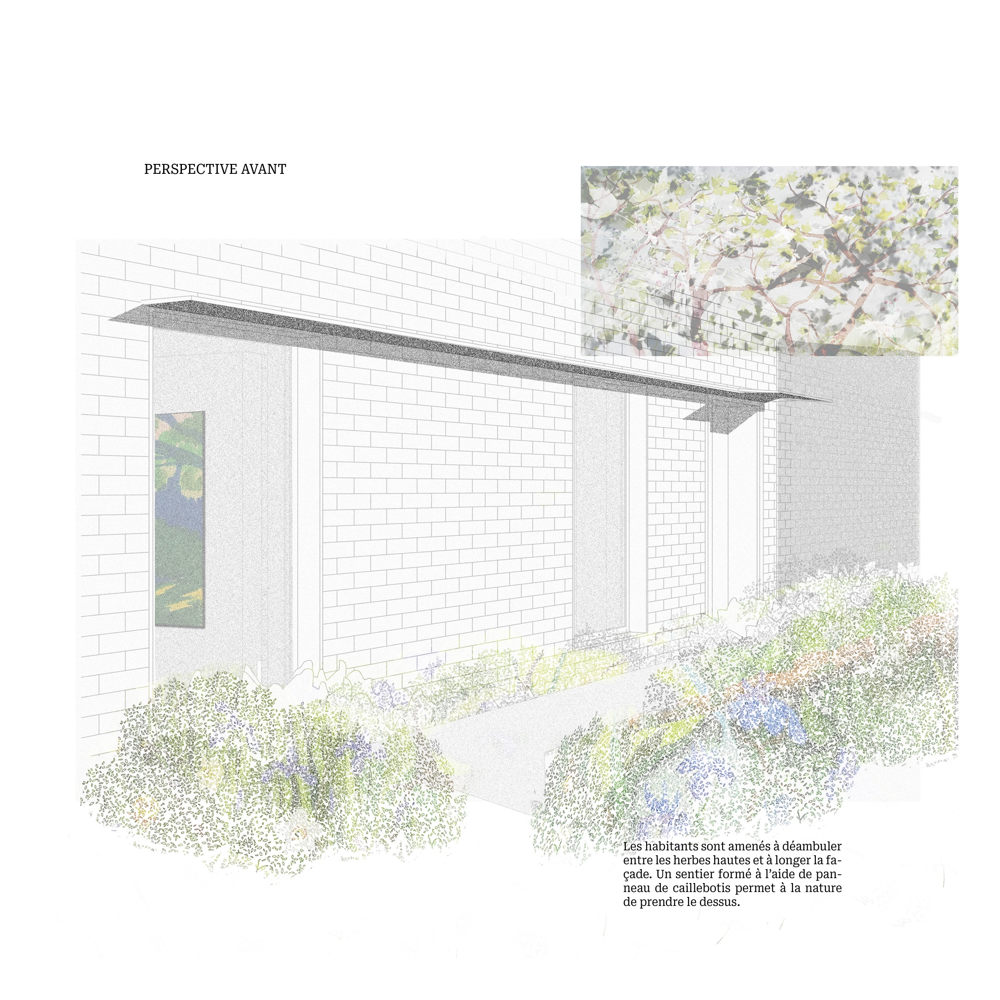
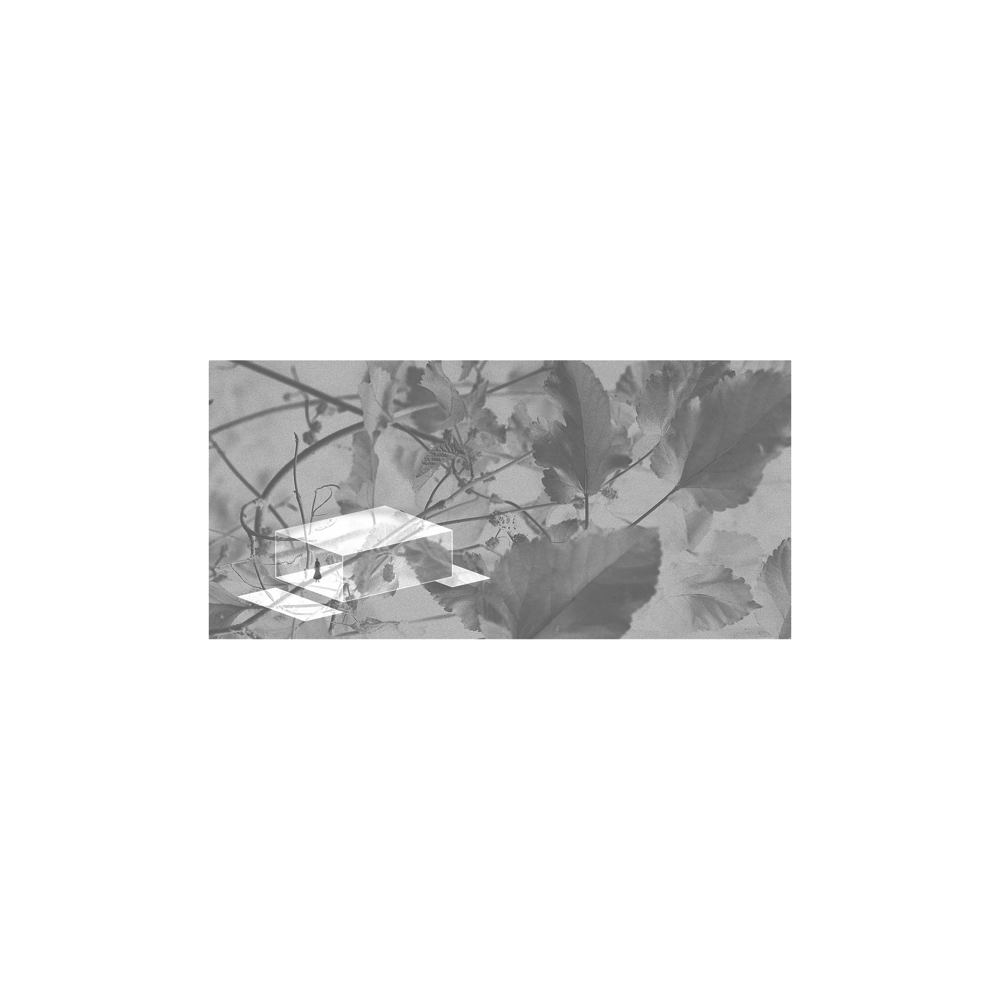
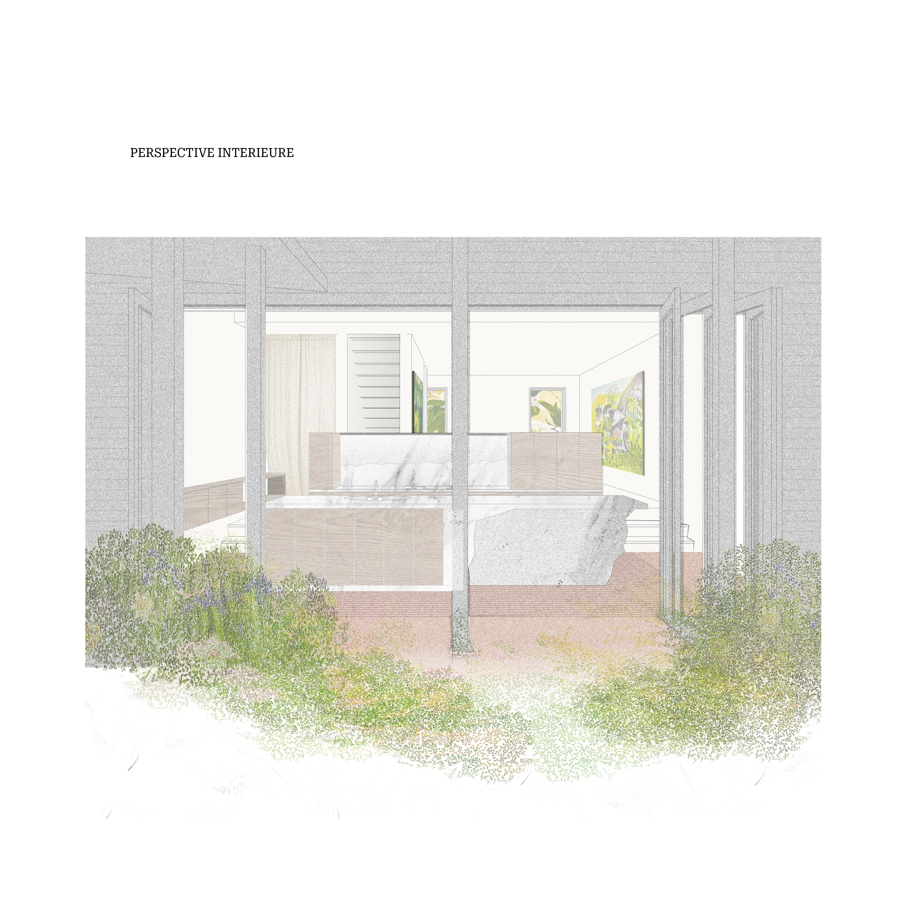
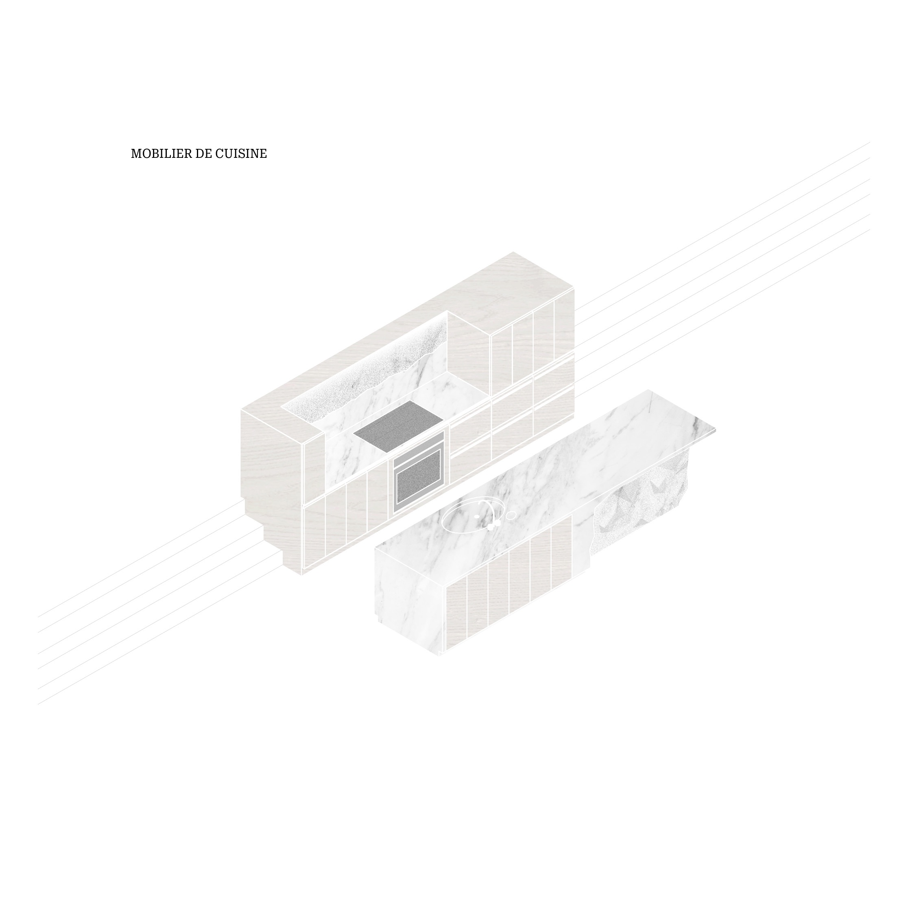
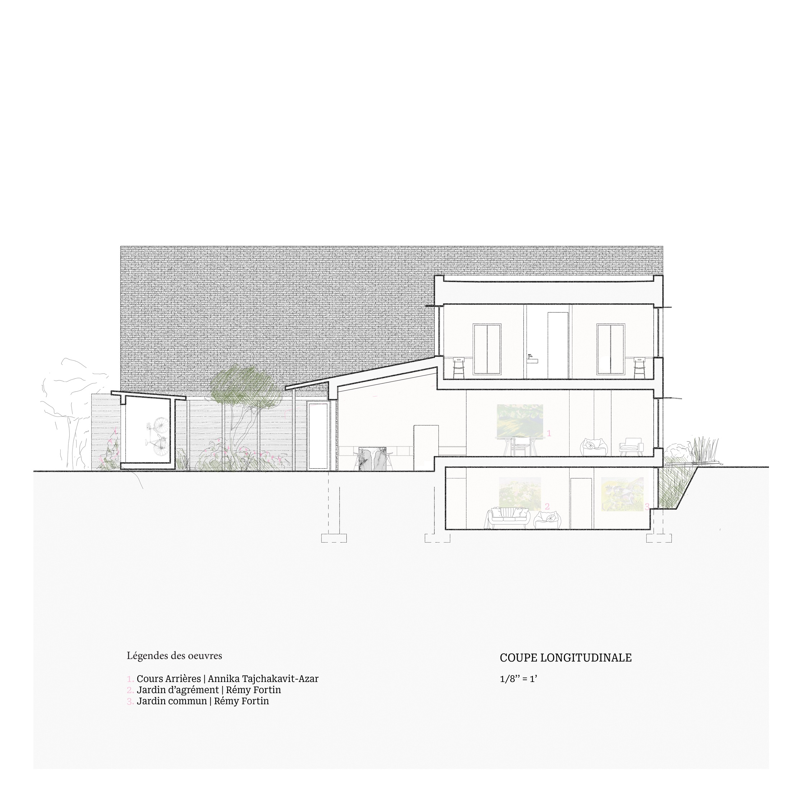
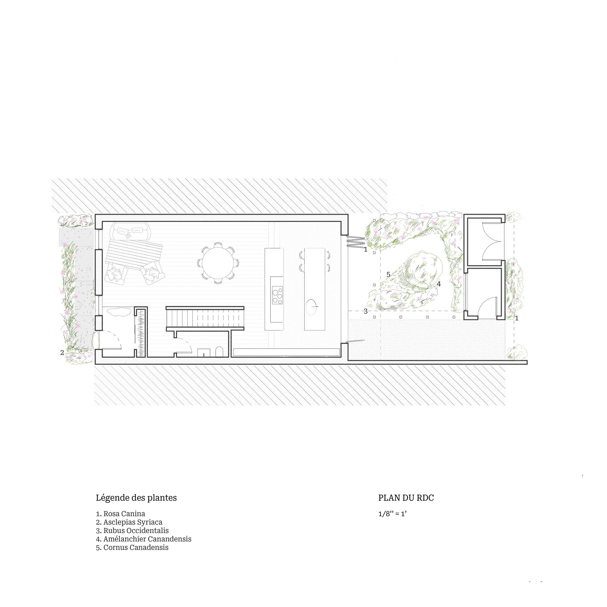
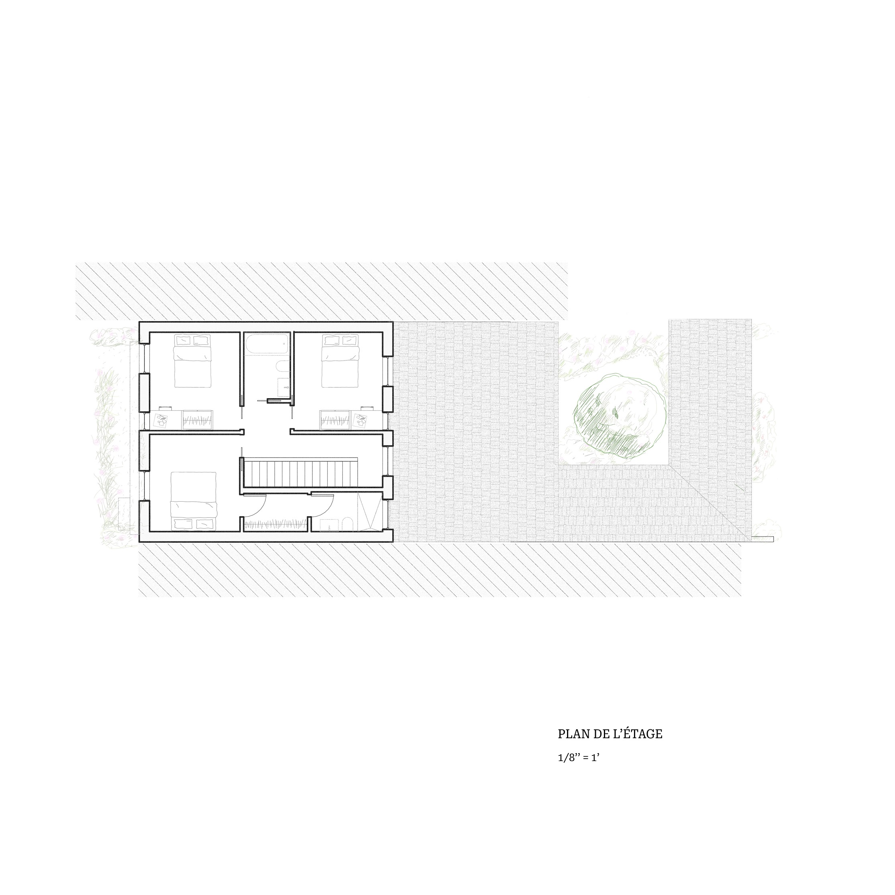
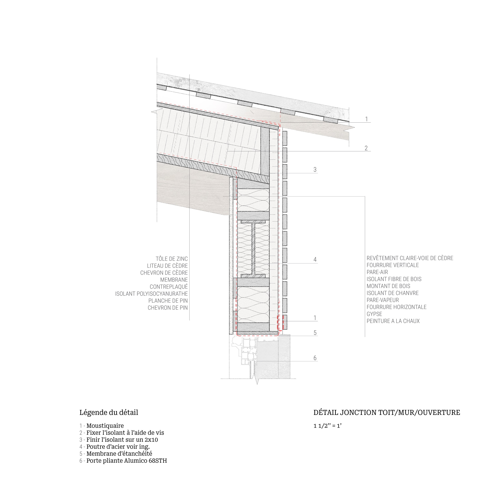

Installée entre deux bâtiments ouvriers typiques du quartier de Pointe-Saint- Charles, la nouvelle maison unifamiliale tente de créer un contact puissant entre ses quatre habitants et un environnement extérieur omniprésent. Le revêtement extérieur de brique rouge entre en dialogue avec les bâtiments issus de l’architec ture vernaculaire du quartier et la volonté de créer un espace extérieur au jardin central s’inspire des maisons de campagne. Ensemble ainsi qu’avec sa matérialité, la maison propose au client une promenade guidée par les différents jardins.







Téléchargements
Présentation complete